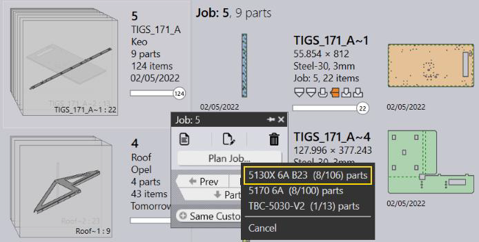
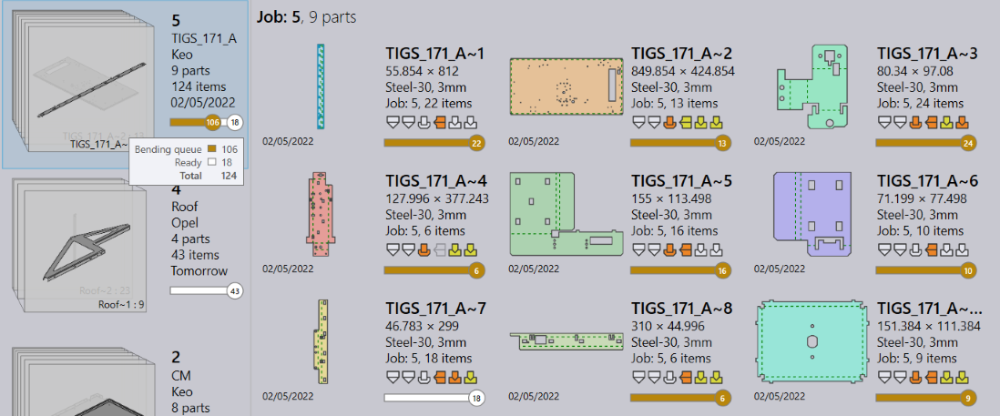
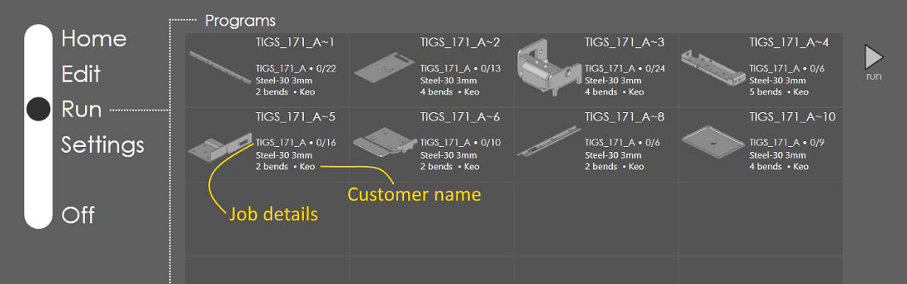

Launch Praxis and RightAngle. Switch to Praxis and import Job spreadsheets from the C:\Program Files\Metamation\Praxis\Samples\Jobs folder. (Or load some parts and create new Job from the part library). Select a job, right click, and use the Plan Job panel command. Select 5130X 6A B23 to add the selected parts to the production queue.

The queued part’s status is updated back in Praxis.

Switch to RightAngle Run page. It displays the programs in 5130X 6A B23 queue. The program tiles display the job details like job name, quantity to run, customer name etc. The tile also displays the Praxis raw-material name instead of the material name.

The program list displays the programs sorted by the priority and the due-date and it automatically refreshes when: ● The production queue is updated in Praxis by adding new programs or removing existing ones.
● Job details like the job-name, customer name etc. are updated.
● The Part geometry is revised, and the part is reprogrammed.
Switch to Praxis Job page and select one or more Jobs or Job-parts.
● Right click and use the Reset Job/Reset Part panel command to revoke the job parts from the production queue.
● The RA program list is automatically updated with the updated queue.